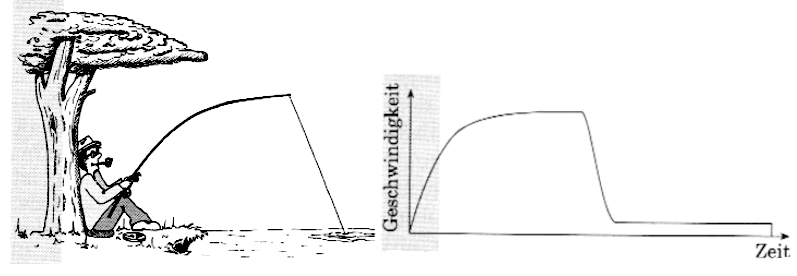

Sportart-Analyse
Welcher Sport liefert einen Graphen wie diesen? Wählen Sie die passende Antwort aus der Liste und erläutern Sie Ihre Wahl ausführlich.
Angeln
Stabhochsprung
100m-Lauf
Fallschirmspringen
Golf
Bogenschiessen
Speerwerfen
Hochsprung
Turmspringen
Billard
Drag Racing (Auto-Beschleunigungsrennen)
Wasserski

Auftrag: Bestimmen Sie die Sportart und begründen Sie, warum der Graph den Verlauf der Geschwindigkeit über die Zeit so darstellt. Erklären Sie auch, warum andere Sportarten (wie z.B. Wurfsportarten oder Sprints) nicht passen.
Gewählte Sportart: Fallschirmspringen
Begründung des Verlaufs:
Phase 1 (Anstieg): Der Springer springt aus dem Flugzeug. Die Geschwindigkeit nimmt durch die Erdbeschleunigung linear zu (freier Fall).
Phase 2 (Erstes Plateau): Der Luftwiderstand nimmt zu, bis er so gross wie die Gewichtskraft ist. Die Endgeschwindigkeit im freien Fall (ca. 180–200 km/h) wird erreicht und bleibt konstant.
Phase 3 (Steiler Abfall): Der Fallschirm wird geöffnet. Die Bremswirkung ist enorm, wodurch die Geschwindigkeit in sehr kurzer Zeit massiv sinkt.
Phase 4 (Zweites Plateau): Der Springer gleitet nun am offenen Schirm mit einer konstanten, deutlich niedrigeren Sinkgeschwindigkeit der Erde entgegen.
Phase 5 (Ende): Bei der Landung sinkt die Geschwindigkeit abrupt auf Null.
Warum andere Sportarten nicht passen:
Wurfsportarten (Speer, Golf, Bogenschiessen): Hier nimmt die Geschwindigkeit nach dem Abwurf/Abschuss durch den Luftwiderstand stetig ab, es gibt keine konstanten Plateaus oder einen so extremen Bremseffekt mitten im Flug.
100m-Lauf / Drag Racing: Hier würde die Kurve nach der Beschleunigung oben bleiben oder nur langsam ausrollen, aber nicht so ein markantes "Stufenprofil" zeigen.
Hochsprung / Turmspringen: Diese dauern viel zu kurz für ein solches Profil; zudem ist die Landung (Aufprall) das sofortige Ende der Bewegung ohne Gleitphase.